Stacks
Personal Project, Fall 2017
Stacks is a self-initated project, serving as a digital photojournal that allows you to keep track of nice moments and meaningful memories throughout the year.
We need a way to keep track and take stock of the things we enjoy. The idea for Stacks was conceved through a critique of digital to do lists. The assignment was to create a personal to do list, but I belive people don't get significant value from making to do lists, and they don't need more digital task scheduling options that try to solve the productivity organization problem. Given the wealth of research going into the lack of prioritization and desired verses actually achieved effectiveness of lists, my goal for this hypothetical app is to make a tool that allows people to track and visualize what is important to them, then use this catalog of information to prioritize accordingly.
Relationships, memories, and interactions are not measured through numbers, but the things you like are! Stacks provides easy documentaton for creating your very own data visulizer based on what you add and sort to your lists.
Is there a way to both qualitatively and quantantatively measure meaningful things to you?
Mondays and New Year's Eve are under-utilized for the fresh start effect. This app operates on the one-year timeline. When the year ends, your collections, or "stacks", are archived. New recommendations for tasks and worthwhile activies are then recommended to start your year fresh! The goal here is to gather data points on intention, and what people actually enjoy, rather than what we think they want to do.
Stacks allows you to carry out your "new year resolutions" by documenting the things you like and the activities you have done. You can create "collections" which serve as albums for similar items. Each item in collections consists of a media file (images and videos from your photo gallery, one that you take through Stacks, or any recommended default icon), item title, and a brief description or notes should you choose to add more text! You can always go back and edit or view the moments of that day.
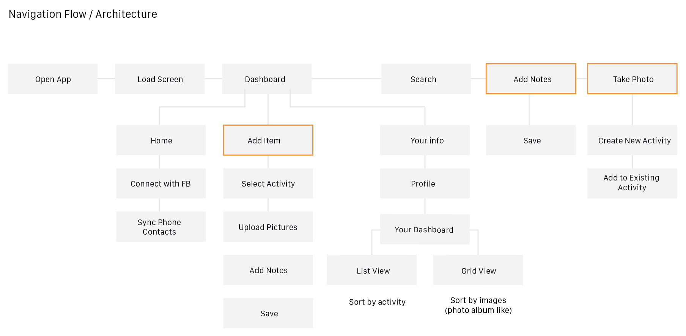
The above architecure diagrams a user flow for the application, with modules that are highlighted in orange being the use cases for which you can add new items.
What should the app do?
1. Help people keep track of things that are memorable to them, and allow them to visualize these items in a clear and concise way. Clear and concise: able to quantify and visualze items nested within categories and easily find, edit, or add on to them.
2. Provide quantantative and qualitative measures to these items, while encouraging exploration on the homepage to see what friends are up to.
3. Generate a fun end-of-the-year document that provides a summary of THEIR year based on the metrics taken from items that they have added!
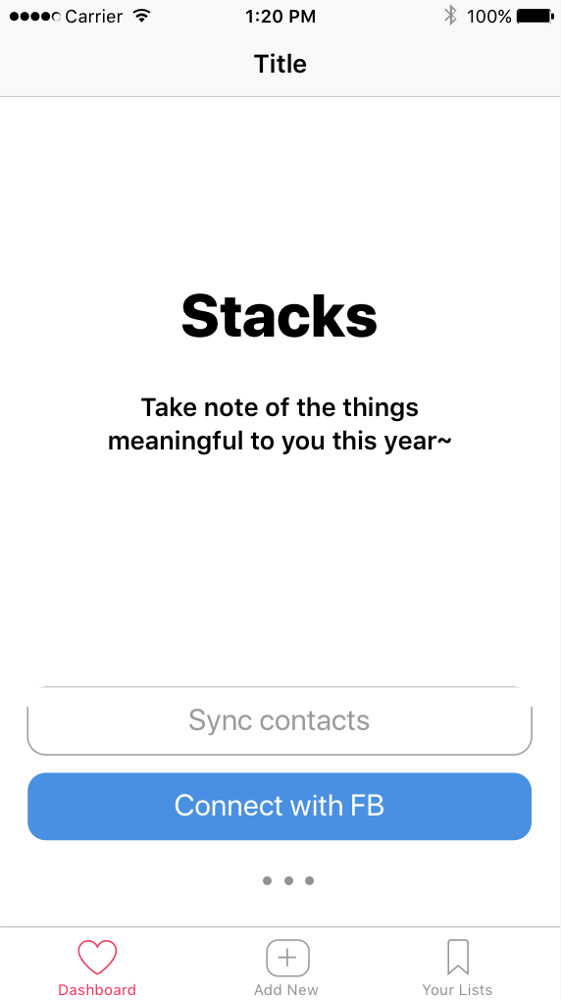 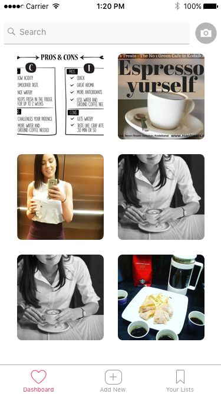 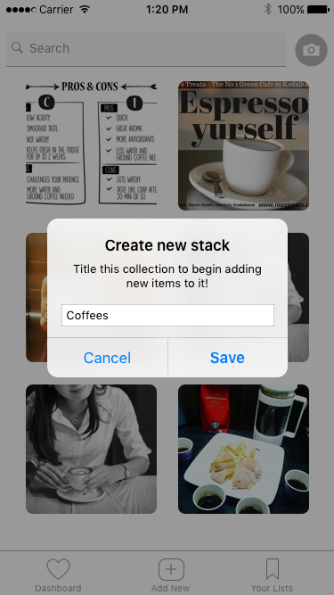
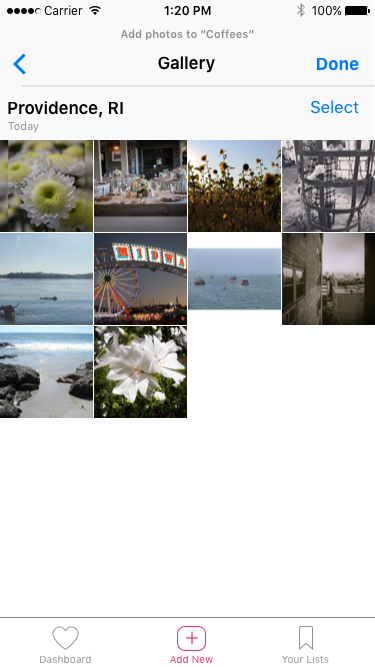
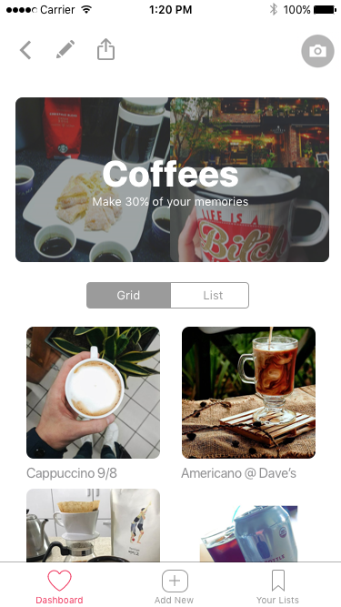
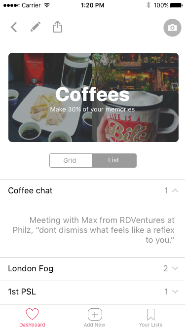
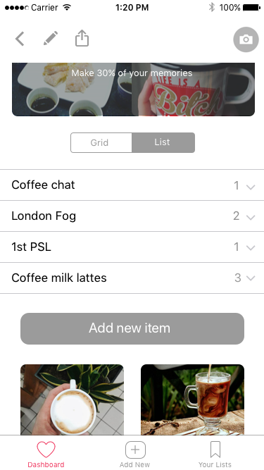
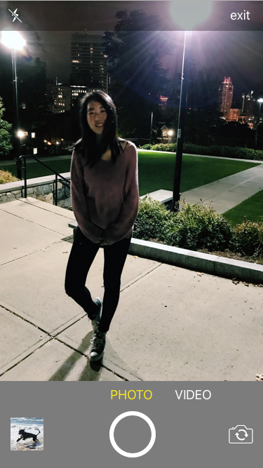
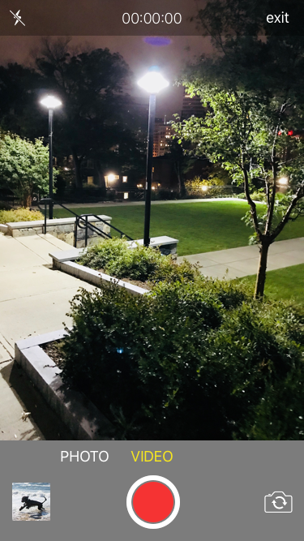
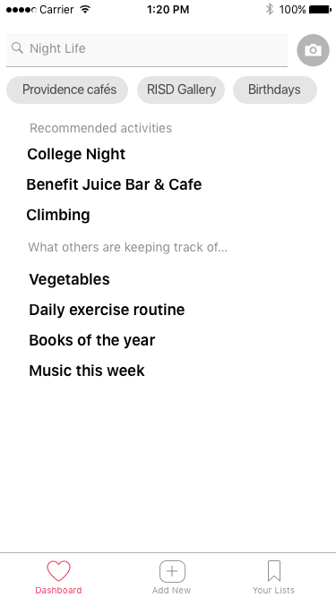
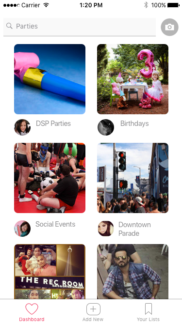
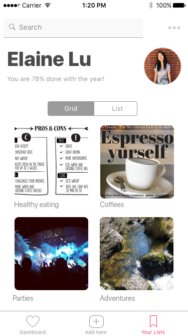
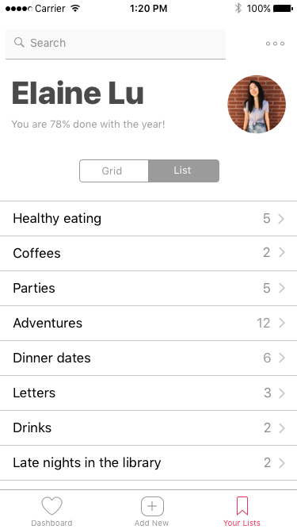
 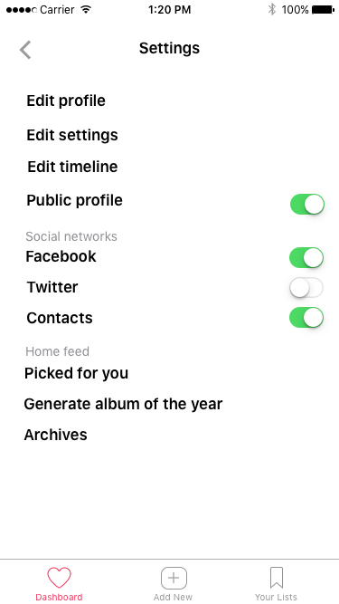
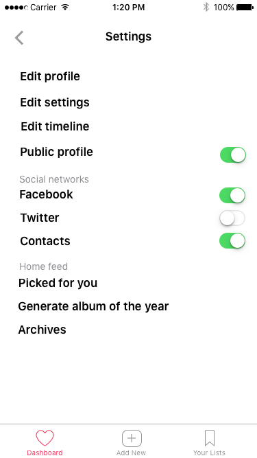